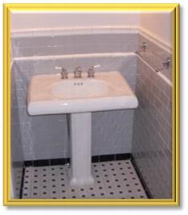
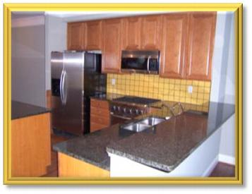
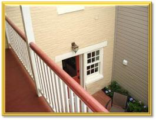

Residential Services
• Turnkey Home Improvement
• Architecture / Permitting
• Restoration/Remodeling
• Total Project Management
• Large and Small Projects
• Painting and Decorating
• Tile Design and Installation
• Kitchen and Bath
• Millwork   